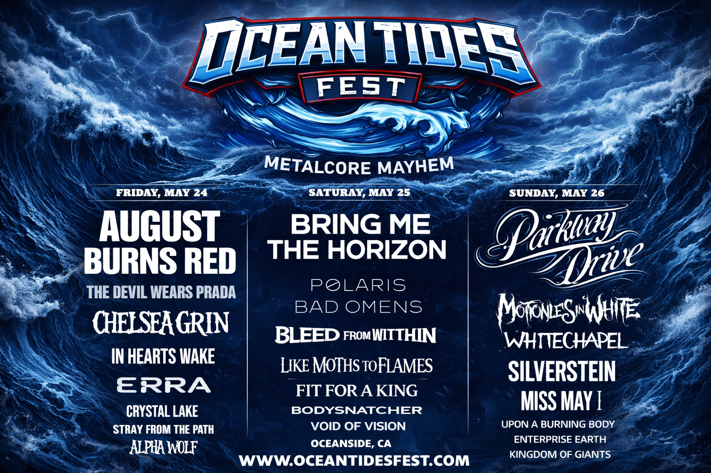

- August Red Burns: Една от най-техническите метълкор банди в жанра – сложни рифове, прецизен ритъм и постоянна енергия без излишни паузи. Групата е известна с безкомпромисния си лайв и умението си да държи публиката в постоянен мошпит.
- The Devil Wears Prada: Банда с дългогодишна история и ясно разпознаваем звук – комбинация от хаотична агресия, мелодични моменти и силно емоционални текстове. На живо залагат на сурова енергия и директен контакт с публиката.
- Chelsea Grin: Тежест, мрак и агресия – Chelsea Grin са синоним на брутален саунд, ниски вокали и масивни breakdown-и. Подходящи за фенове, които търсят максимална интензивност и безкомпромисен звук.
Петък, 25 май
- Bring Me The Horizon: Една от най-влиятелните съвременни банди, започнали от деткор корени и развили уникален стил през годините. Известни с експериментирането си и впечатляващите си продукции.
- Polaris: Модерен метълкор с баланс между тежест и мелодия. Бандата се отличава с емоционално заредени текстове, силни припеви и незабравими лайв изпълнения.
- Bad Omens: Атмосферен и мрачен звук с ясно изразена идентичност. Bad Omens комбинират тежки рифове с мелодични вокали, което ги прави силно разпознаваеми на съвременната метълкор сцена.
Събота, 26 май
- Parkway Drive: Австралийска метълкор машина с дългогодишна кариера и култов статус. Известни с огромната си енергия, масивни рифове и шоу, което винаги оставя незабравимо.
- Motionless in White: Банда със силно изразена визуална и музикална идентичност, съчетаваща метълкор, индустриални елементи и готическа атмосфера. Motionless In White са познати с тежките си рифове, запомнящи се припеви и мрачна естетика, която доминира сцената и създава уникално лайв преживяване.
- Whitechapel: Deathcore ветерани със силно разпознаваем стил – смазващи рифове, брутални вокали и постоянен натиск, който държи публиката в пълен хаос през целия сет.